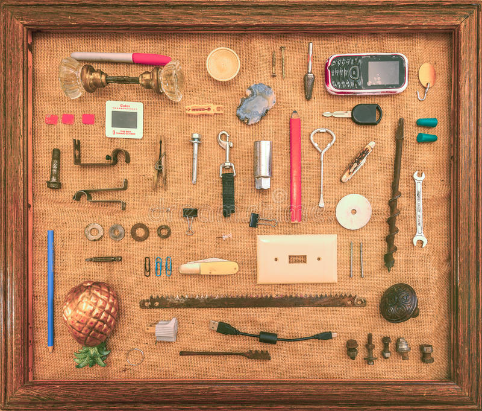

Back button
Drawer 1

- Pink sharpie
I love pink and sharpies.
- Old car key
From my first car; a 1996 Buick Regal.
- Pinapple
An old car freshener. I liked the design.
- Vintage door knob
Is there a door out in the wild missing a knob? Testing if the line continues to run stright or if it tabs down.